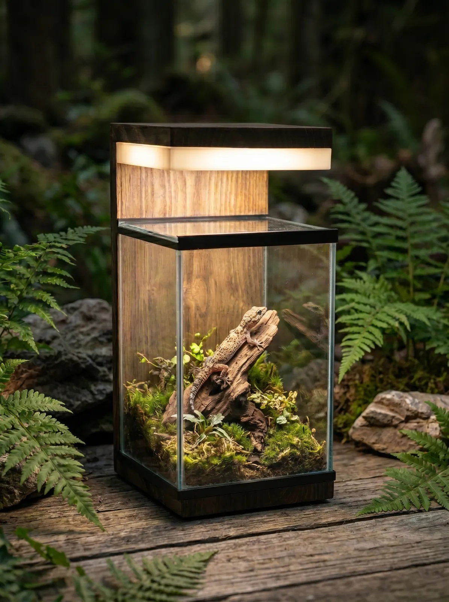
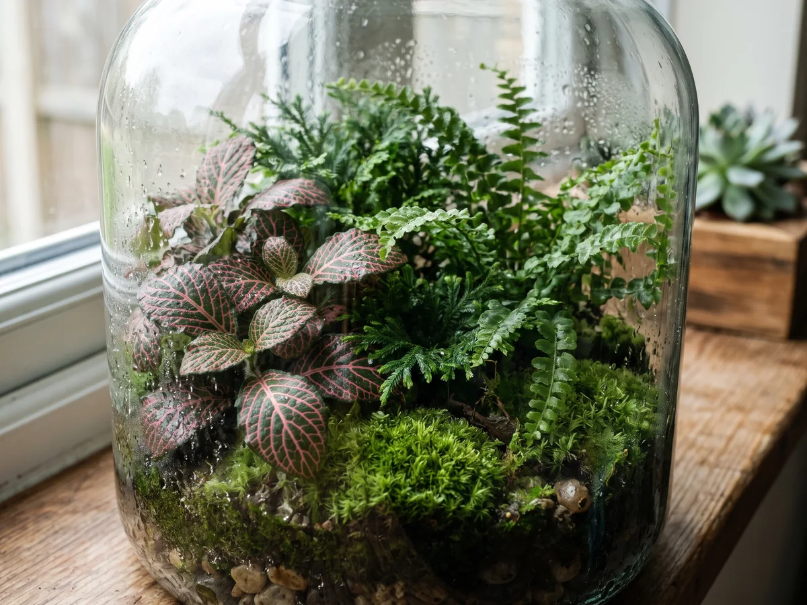
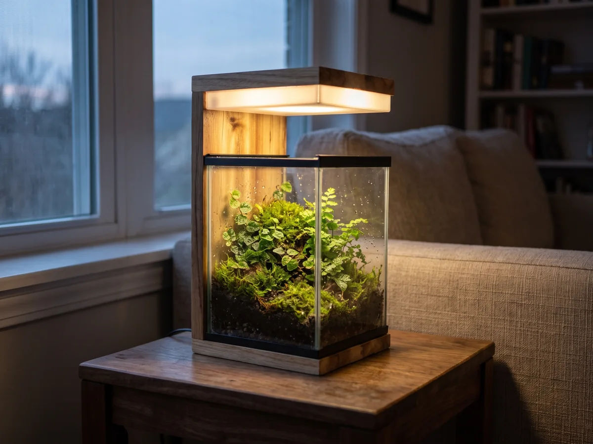
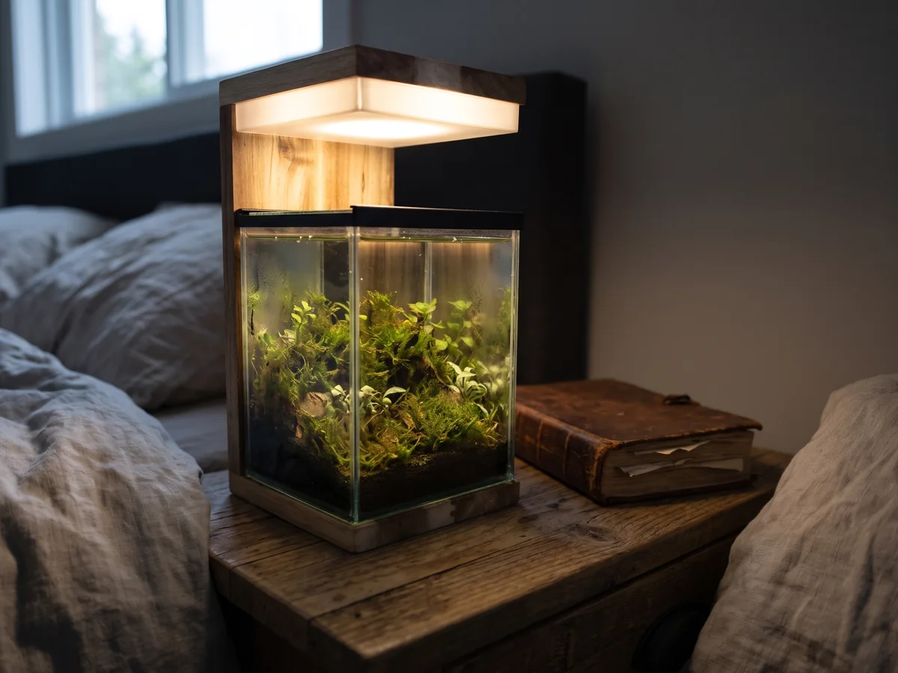

Teraryum nasıl yapılır? Adım adım kapalı teraryum rehberi

Teraryum, camla çevrili küçük bir bahçedir. Kapalı bir teraryumda bitkilerin terlediği su camda yoğuşur ve yeniden toprağa döner; böylece neredeyse hiç sulama gerektirmeyen, kendi kendine yaşayan bir mini ekosistem oluşur. Bu rehberde teraryum nasıl yapılır sorusunu adım adım cevaplıyoruz.
Gerekenler
- Kapaklı cam hazne (Tankled ürünlerinde sürgülü buhar kapağı bu iş için idealdir)
- Drenaj katmanı: kil topu, ponza ya da ince çakıl
- Aktif karbon (koku ve küf oluşumunu azaltır)
- Ayırıcı katman: tül, file ya da kuru yosun
- Teraryum toprağı: torf, hindistan cevizi lifi ve perlit karışımı
- Nem seven küçük bitkiler, yosun, taş ve kökler
1. Drenaj katmanını oluşturun
Cam haznenin drenaj deliği olmadığı için fazla su dipte birikir. Tabana 2–3 cm kil topu ya da çakıl sererek bu suyun toprağa geri çıkmasını ve kökleri çürütmesini önleyin.
2. Aktif karbon ve ayırıcı
Drenajın üzerine ince bir kat aktif karbon serpin. Ardından toprağın drenaja karışmasını engellemek için bir tül ya da kuru yosun katmanı yerleştirin.
3. Toprak ve yerleşim
4–6 cm teraryum toprağını arkası yüksek, önü alçak olacak şekilde eğimli serin. Önce taş ve kökleri yerleştirip "manzarayı" kurun, ardından bitkileri büyükten küçüğe doğru dikin.
4. Bitki seçimi
Kapalı teraryum için yavaş büyüyen ve yüksek nemi seven bitkiler seçin: fittonia, peperomia prostrata, pilea, selaginella, küçük eğrelti türleri ve yosunlar. Ayrıntılar için teraryum bitkileri ve bakımı yazımıza ve bitkiler rehberimize bakın.
5. İlk sulama ve nem dengesi
Toprağı bir püskürtücüyle nemlendirin; su dibe göllenmemeli. Kapağı kapatın ve ilk günlerde camı gözlemleyin: Sabahları hafif buğu normaldir. Cam sürekli damlalarla kaplıysa kapağı birkaç saat aralayın; hiç buğu yoksa biraz su püskürtün.
6. Işık
Teraryumu doğrudan güneşe koymayın; cam, içeriyi hızla ısıtır. Dolaylı gün ışığı ya da günde 6–8 saat LED ışık yeterlidir. Tankled gövdelerindeki 6500K ışık tonu bitkiler için, 3000K tonu ise akşamları dekoratif bir abajur etkisi için tasarlandı.
Hazır, ahşap gövdeli ve ışıklı bir teraryum arıyorsanız teraryum sayfamıza göz atın. Tankled ürünleri akvaryum, teraryum, abajur ve bitki saksısı olarak kullanılabilir.
Ankara'da el yapımı akvaryum
Ostim'deki atölyemizde doğal masif ahşaptan mobilyalı ve dekoratif akvaryumlar üretiyoruz. Türkiye'nin 81 iline ve yurt dışına kargo yapıyoruz. Ölçünüze özel tasarım için bize ulaşın.
WhatsApp ile yazın Koleksiyonu inceleyinDiğer yazılar

Teraryum bitkileri ve teraryum bakımı: en kolay türler
Teraryum bitkileri hangileri? Kapalı ve açık teraryum için en uygun bitkiler, teraryum bakımı, sulama, ışık, küf ve buğu sorunlarına çözümler.
Devamını oku →
Dekoratif abajur fikirleri: içinde yaşam olan ahşap abajur
Salon ve yatak odası için dekoratif abajur fikirleri: ahşap abajur, sıcak ışık tonu seçimi ve içinde bitki ya da akvaryum olan yaşayan abajur tasarımı.
Devamını oku →
Gece lambası fikirleri: yatak odası için ışıklı teraryum lamba
Yatak odası ve çocuk odası için dekoratif gece lambası fikirleri: sıcak ışıklı teraryum lamba, ahşap gece lambası ve uykuya uygun ışık tonu seçimi.
Devamını oku →